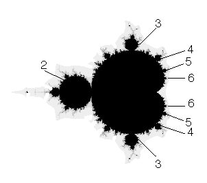

|  |
| We begin by looking for patterns in the n-cycle components (discs) attached around the big cardioid. |
| Starting from the 2-cycle disc, proceeding around the top of the big cardioid we encounter |
| a 3-cycle disc, |
| a 4-cycle disc, |
| a 5-cycle disc, |
| ... and so on. |
| This is the upper principal series. |
| The analogous sequence along the bottom of the cardioid is the lower principal series. |
Return to Combinatorics in the Mandelbrot Set.